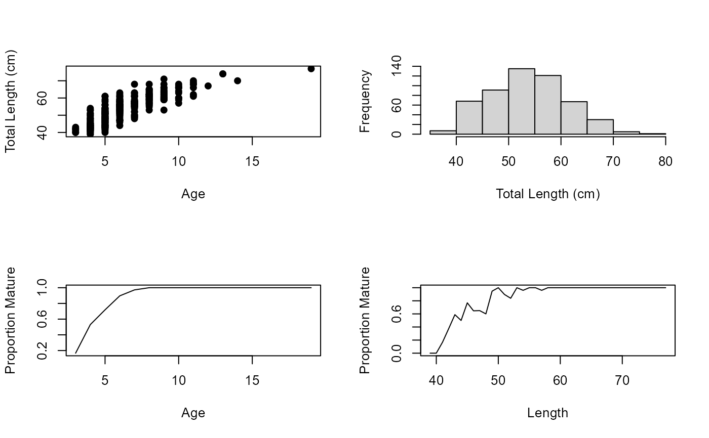

Ages, lengths, and maturity for female Cabezon (Scorpaenichthys marmoratus) from Newport and Depoe Bay, Oregon.
Format
A data frame with 525 observations on the following 5 variables.
- date
Date fish was collected
- length
Total length (cm)
- age
Otolith age
- maturity
Maturity state (
ImmatureorMature)- stage
Stage of maturity (
1:Immature,2:Maturing,3:Mature,4:Fertilized,5:Ripe,6:Spent,7:Resting)
Source
Actual data obtained directly (from Bob Hanna) from Hannah, R.W, M.T.O. Blume, and J.E. Thompson. 2009. Length and age at maturity of female yelloweye rockfish (Sebastes rubberimus) and cabezon (Scorpaenichthys marmoratus) from Oregon waters based on histological evaluation of maturity. Oregon Department of Fish and Wildlife, Information Reports 2009-04. [Was (is?) from http://www.dfw.state.or.us/mrp/publications/docs/Info200904_YlwEyeRF_Maturity.pdf.]
Examples
data(Cabezon)
str(Cabezon)
#> 'data.frame': 525 obs. of 5 variables:
#> $ date : Factor w/ 280 levels "1/26/2008","10/25/2003",..: 40 81 219 219 208 208 201 4 4 13 ...
#> $ length : int 51 52 57 52 53 54 55 67 54 56 ...
#> $ age : int NA NA NA NA NA NA NA NA NA NA ...
#> $ maturity: Factor w/ 3 levels "Immature","Mature",..: 2 2 2 2 2 2 2 2 2 2 ...
#> $ stage : int 6 6 7 6 6 6 6 4 2 4 ...
head(Cabezon)
#> date length age maturity stage
#> 1 4/28/2003 51 NA Mature 6
#> 2 5/4/2003 52 NA Mature 6
#> 3 7/6/2003 57 NA Mature 7
#> 4 7/6/2003 52 NA Mature 6
#> 5 7/30/2003 53 NA Mature 6
#> 6 7/30/2003 54 NA Mature 6
op <- par(mfrow=c(2,2),pch=19)
plot(length~age,data=Cabezon,ylab="Total Length (cm)",xlab="Age")
hist(Cabezon$length,xlab="Total Length (cm)",main="")
tbl1 <- xtabs(~age+maturity,data=Cabezon)
(ptbl1 <- prop.table(tbl1,margin=1))
#> maturity
#> age Immature Mature Unknown
#> 3 0.83333333 0.16666667 0.00000000
#> 4 0.46938776 0.53061224 0.00000000
#> 5 0.25352113 0.71830986 0.02816901
#> 6 0.10344828 0.89655172 0.00000000
#> 7 0.02777778 0.97222222 0.00000000
#> 8 0.00000000 1.00000000 0.00000000
#> 9 0.00000000 1.00000000 0.00000000
#> 10 0.00000000 1.00000000 0.00000000
#> 11 0.00000000 1.00000000 0.00000000
#> 12 0.00000000 1.00000000 0.00000000
#> 13 0.00000000 1.00000000 0.00000000
#> 14 0.00000000 1.00000000 0.00000000
#> 19 0.00000000 1.00000000 0.00000000
plot(ptbl1[,2]~as.numeric(row.names(ptbl1)),type="l",xlab="Age",ylab="Proportion Mature")
tbl2 <- xtabs(~length+maturity,data=Cabezon)
(ptbl2 <- prop.table(tbl2,margin=1))
#> maturity
#> length Immature Mature Unknown
#> 39 1.00000000 0.00000000 0.00000000
#> 40 1.00000000 0.00000000 0.00000000
#> 41 0.83333333 0.16666667 0.00000000
#> 42 0.62500000 0.37500000 0.00000000
#> 43 0.41176471 0.58823529 0.00000000
#> 44 0.43750000 0.50000000 0.06250000
#> 45 0.23076923 0.76923077 0.00000000
#> 46 0.35294118 0.64705882 0.00000000
#> 47 0.35000000 0.65000000 0.00000000
#> 48 0.40000000 0.60000000 0.00000000
#> 49 0.00000000 0.94736842 0.05263158
#> 50 0.00000000 1.00000000 0.00000000
#> 51 0.10344828 0.89655172 0.00000000
#> 52 0.16129032 0.83870968 0.00000000
#> 53 0.00000000 1.00000000 0.00000000
#> 54 0.00000000 0.96000000 0.04000000
#> 55 0.00000000 1.00000000 0.00000000
#> 56 0.00000000 1.00000000 0.00000000
#> 57 0.04000000 0.96000000 0.00000000
#> 58 0.00000000 1.00000000 0.00000000
#> 59 0.00000000 1.00000000 0.00000000
#> 60 0.00000000 1.00000000 0.00000000
#> 61 0.00000000 1.00000000 0.00000000
#> 62 0.00000000 1.00000000 0.00000000
#> 63 0.00000000 1.00000000 0.00000000
#> 64 0.00000000 1.00000000 0.00000000
#> 65 0.00000000 1.00000000 0.00000000
#> 66 0.00000000 1.00000000 0.00000000
#> 67 0.00000000 1.00000000 0.00000000
#> 68 0.00000000 1.00000000 0.00000000
#> 69 0.00000000 1.00000000 0.00000000
#> 70 0.00000000 1.00000000 0.00000000
#> 71 0.00000000 1.00000000 0.00000000
#> 74 0.00000000 1.00000000 0.00000000
#> 77 0.00000000 1.00000000 0.00000000
plot(ptbl2[,2]~as.numeric(row.names(ptbl2)),type="l",xlab="Length",ylab="Proportion Mature")

par(op)